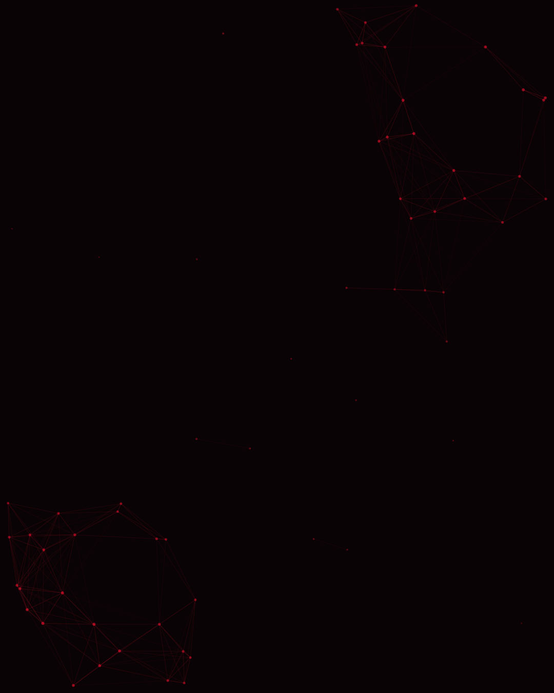

Growth & Strategy
Growth & StrategyMelhores decisões digitais
Estratégia
digital com
prioridades
claras.
digital com
prioridades
claras.
Ligamos os objetivos do negócio à estratégia de produto, ao desempenho digital e à liderança tecnológica.
Growth & StrategyLigamos os objetivos do negócio à estratégia de produto, ao desempenho digital e à liderança tecnológica.

03/05Vamos identificar onde investir e como acompanhar os resultados.
Fale-nos do seu desafio →